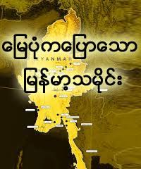

မြန်မာ (မြန်မာနိုင်ငံအဖြစ်လူသိများ) 13,000 လွန်ခဲ့တဲ့နှစ်ပေါင်းဦးပထမဦးဆုံးလူသိများလူ့အခြေချနေထိုင်၏အချိန်ကနေပစ္စုပ္ပန်နေ့ကာလကိုဖုံးလွှမ်း။ ၏အစောဆုံးမြို့သားတို့ကို မှတ်တမ်းတင်ထားသောသမိုင်း တစ်ခဲ့ကြသည် ပြောဆိုဗမာလူမျိုးစကားပြော ယင်းထူထောင်သူတွေကို ပျူမြို့ပြနိုင်ငံများကို အဖြစ်ဝေးတောင်ဘက်အဖြစ်အရွယ်ရှိ ပြည်လမ်း နှင့်မွေးစား ထေရဝါဒဗုဒ္ဓဘာသာ ။ နောက်ထပ်အုပ်စုတစုသည် ဗမာလူမျိုးကလူ , အစောပိုင်း 9 ရာစုအတွင်းအထက်ဧရာဝတီချိုင့်ဝှမ်းဝင်ကြ၏။ သူတို့ဟာတည်ထောင်ရန်သွား ပုဂံဒမ်း (1044-1287), ဧရာဝတီချိုင့်ဝှမ်းနှင့်ယင်း၏အစွန်အဖျား၏ပထမဆုံးပေါင်းစည်းရေး။ အဆိုပါ မြန်မာဘာသာစကား နဲ့ဗမာစကားအများဆုံးယဉ်ကျေးမှုတဖြည်းဖြည်းဒီကာလအတွင်းပျူစံချိန်စံညွှန်းကိုအစားထိုးသို့ရောက်ကြ၏။ ယင်းပြီးနောက် မြန်မာနိုင်ငံ၏ပထမဦးဆုံးဂိုကျူးကျော် သည့်အရာ၏ 1287 ခုနှစ်, အတော်ကြာသေးငယ်တဲ့နိုင်ငံတို့ကို အင်းဝ၏ဒမ်း သည် ဟံသာဝတီဒမ်း , ထို မြောက်ဦး၏ခင့်နိုင်ငံတော် နှင့် ရှမ်းပြည်နယ် , ထိုရှုခင်းကိုလွှမ်းမိုးဖို့ရောက်လာသည်ကား, ကာလအစဉ်အမြဲ-ပြောင်းလဲမဟာမိတ်ဖွဲ့တှေအမြားကွီးကျောင်းအုပ်ကြီးအင်အားကြီးခဲ့ကြသည် နှင့်စဉ်ဆက်မပြတ်စစ်ပွဲတွေ။ 16 ရာစု၏ဒုတိယတစ်ဝက်တွင်, တောင်ငူမင်းဆက် (1510-1752) ကတိုင်းပြည်ကိုပြန်ပေါင်းစည်းနှင့်အကျဉ်းကာလအတွက်အရှေ့တောင်အာရှ၏သမိုင်းအတွက်အကြီးဆုံးအင်ပါယာကိုတည်ထောင်ခဲ့ပါတယ်။ နောက်ပိုင်းတွင်တောင်ငူရှငျဘုရငျတို့တစ်ဦး 17 အတွက်သေးငယ်ပိုမိုငြိမ်းချမ်းပြီးသာယာဝပြောတဲ့နိုငျငံတျောသညျနှငျ့အစောပိုငျး 18 ရာစုနှစ်ပေါင်းများစွာမှမြင့်တက်ပေးသောအများအပြား key ကိုအုပ်ချုပ်ရေးနှင့်စီးပွားရေးပြုပြင်ပြောင်းလဲမှုများထူထောင်။ 18 ရာစု၏ဒုတိယထက်ဝက်မှာ ကုန်းဘောင်မင်းဆက် (1752-1885) နိုင်ငံတော်ကိုပွနျလညျထူထောငျနှင့်အရံဒေသများအတွက်ဗဟိုစည်းမျဉ်းတိုးမြှင့်ခြင်းနှင့်အာရှရှိအရှိဆုံးစာတတ်မြောက်ပြည်နယ်များများထဲမှထုတ်လုပ်သောတောင်ငူပြုပြင်ပြောင်းလဲမှုများဆက်လက်ပြုလုပ်ခဲ့သည်။ အဆိုပါမင်းဆက်လည်းအားလုံး၎င်း၏အိမ်နီးချင်းများနှင့်အတူစစ်ချီသွားကြ၏။ အဆိုပါ Anglo-ဗမာစစ်ပွဲများ (1824-85) နောက်ဆုံးမှာဗြိတိသျှကိုလိုနီအုပ်စိုးမှုမှဦးဆောင်ခဲ့သည်။ ဗြိတိသျှအုပ်ချုပ်ရေး လုံးဝတစ်ချိန်က-စိုက်ပျိုးရေးလူ့အဖွဲ့အစည်းအသွင်ပြောင်းအများအပြား၌အမြဲတည်သောလူမှုရေး, စီးပွားရေး, ယဉ်ကျေးမှုနှင့်စီမံခန့်ခွဲရေးဆိုင်ရာအပြောင်းအလဲများကိုဆောင်ခဲ့လေ၏။ အရေးအကြီးဆုံးကတော့ဗြိတိသျှအုပ်စိုးမှုနိုင်ငံရဲ့များပြားလှသည့်တိုင်းရင်းသားအုပ်စုများအကြားထွက်-အုပ်စုသည်ကွဲပြားခြားနားမှုမီးမောင်းထိုးပြ။ 1948 ခုနှစ်လွတ်လပ်ရေးရပြီးကတည်းကတိုင်းပြည်အတွင်းခဲ့ အရှည်ဆုံး running ပြည်တွင်းစစ်များထဲမှ နိုင်ငံရေးနှင့်တိုင်းရင်းသားလူနည်းစုအုပ်စုများနှင့်အဆက်ဆက်သည်အလယ်ပိုင်းအစိုးရများကိုယ်စားပြုသောင်းကျန်းသူအုပ်စုများပါဝင်သော။ တိုင်းပြည်သည် 2010 မှ 1962 ခုနှစ်ကနေအမျိုးမျိုးသောအသွင်အောက်တွင်စစ်အုပ်ချုပ်ရေးအောက်မှာကြီးနှင့်လုပ်ငန်းစဉ်များတွင်ကမ္ဘာ့ဖွံ့ဖြိုးမှုအနည်းဆုံးတပါးအမြိုးသားတစျဦးဖြစ်လာသည်။
ပင်မဆောင်းပါး: ူမန်မိာိုံင်ငံမတင်မီခေတ် အစောဆုံးရှေးဟောင်းသုတေသနအထောက်အထားများကိုယဉ်ကျေးမှု 11,000 ဘီစီအဖြစ်အစောပိုင်းအဖြစ်မြန်မာပြည်မှာတည်ရှိကြောင်းအကြံပြုထားသည်။ အစောပိုင်းအခြေချအများစုမှာလက္ခဏာများန့်ဆိုက်များဧရာဝတီမြစ်နီးစပ်နီးကပ်ပေါ်လာရှိရာအလယ်ပိုင်းခြောက်သွေ့တဲ့ဇုန်အတွက်ရှာတွေ့ပါပြီ။ အဆိုပါ Anyathian မြန်မာနိုင်ငံ၏ကျောက်ခေတ်, ဥရောပမှာရှိတဲ့အောက်ပိုင်းနှင့်အလယ်တန်း Paleolithic စင်ပြိုင်ဖို့စဉ်းစားနေတဲ့အချိန်ကရှိခဲ့သညျ။ အပင်များနှင့်သတ္တဝါများကိုပထမဦးဆုံးမွေးမြူခဲ့ကြခြင်းနှင့်ပွတ်သောကျောက် tools များသည်ထင်ရှားလာသောအခါအဆိုပါ Neolithic သို့မဟုတ်နယူးကျောက်ခေတ်, 10000 6000 မှဘီစီမှရက်စွဲပါသောရှမ်းကုန်းပြင်မြင့်၏အစွန်းမှာတောင်ကြီးမြို့အနီးတွင်တည်ရှိပြီးသုံးလိုဏ်ဂူအားဖြင့်မြန်မာနိုင်ငံအတွက်သက်သေဖြစ်ပါတယ်။ [1] အကြောင်း 1500 ဘီစီဒေသတွင်း၌လူမျိုး, ကြေးဝါသို့ကြေးနီလှည့်ဆန်ကြီးထွားလာခြင်း, ကြက်, ဝက် domesticating ကြသည် ဟူ. ၎င်း, သူတို့အဲဒီလိုလုပ်ဖို့ကမ္ဘာပေါ်မှာပထမဦးဆုံးလူတို့တွင်ရှိကြ၏။ 500 ဘီစီအားဖြင့်, သံ-အလုပ်လုပ်ကိုင်အခြေချနေထိုင်တောင်ဘက်ကျြမှောကျခတျေ၏ဧရိယာထဲမှာပေါ်ထွက်လာ မန္တလေး ။ မြေထည်အကြွင်းအကျန်နှင့်ပြည့်စုံသောကြေးဝါ-အလှဆင်ခေါင်းနှင့်သင်္ချိုင်းက်ဘ်ဆိုက်များတူးဖော်တွေ့ရှိခဲ့ကြသည်။ [2] Samon ချိုင့်မှာရှေးဟောင်းသုတေသနအထောက်အထားများကိုတောင်ဘက်မန္တလေးဘီစီ 500 နှင့် 200 စီအီးအကြားတရုတ်နှင့်ကုန်သွယ်ကြောင်းဆန်ကြီးထွားလာအခြေချနေထိုင်အကြံပြုထားသည်။ [3] ထိုသံခေတ်စဉ်အတွင်းမှာလည်း Samon ချိုင့်ထဲကရှေးဟောင်းသုတေသနအထောက်အထားကိုအလွန်အိန္ဒိယကလွှမ်းမိုးခဲ့မွေးကင်းစကလေးအလောင်းကိုသင်္ဂြိုဟ်မည်ဟုအလေ့အထများပြောင်းလဲမှုများထုတ်ဖေါ်။ ဤပြောင်းလဲမှုများသူတို့ရဲ့အရွယ်အစားဟာသူတို့ရဲ့မိသားစု status ကိုပုံဖော်ထားတဲ့အတွက်အိုးမြှုပ်မွေးကင်းစပါဝင်သည်။